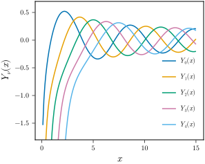
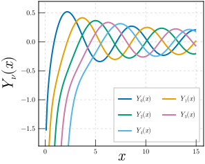
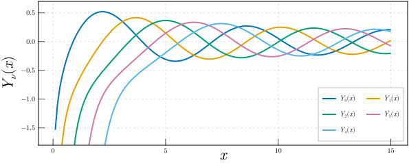

Exporting figures publication
You often want to apply specific themes or export figures in different sizes. For instance a margin figure size and a full \textwidth size. Also you may want to have different themes for the margin figures and the main base document figures. This type of task is made easier by MakieMaestro by supplying the Themes module and the savefig function.
Theming
First off, we would like to set a default width that will be used if no width is provided. MakieMaestro tries to avoid assuming any particular aspect of your figures except some elementary sensible defaults. The function width!, is used to set the default width.
using MakieMaestro.Themes
width!(Themes.A4_WIDTH/2)105.0 mmNow that we have a default width, any figure that we will be exporting will assume this width and calculate the height based on the set height-width ratio. The default is the golden ratio, but it is possible to change this similarly to as we set the width with the function hwratio!.
hwratio!(0.8)Suppose that we want to use a specific theme for a figure in the appendix. We would therefore define a theme and save it under the key :appendix into our theme collection with the function Themes.update_theme.
Themes.update_theme(:appendix,
Theme(;
Axis=(;
ylabelsize = 22, xlabelsize = 22, xgridstyle = :dash, ygridstyle = :dash, xtickalign = 1,
xticksize = 10, ytickalign = 1, yticksize = 10, xlabelpadding = -10, xgridvisible = true, ygridvisible
= true
),
Lines=(;
linewidth = 2
),
Legend=(;
nbanks = 2, framecolor = (:grey, 0.5), framevisible = true
)
)
)Now we have a defined appendix variant theme, that we will be in-mixing with the base theme whenever exporting a figure for the appendix.
We can check what the final theme looks like with a combination of the various applied keys using Themes.get_theme.
julia> Themes.get_theme(:base, :appendix, :rotate_labels);
Exporting figures
The key to this workflow is to have define function that produce the figure which we want to export.
using SpecialFunctions
function bessely_fig()
fig = Figure()
ax = Axis(fig[1, 1], xlabel = L"x", ylabel = L"Y_{\nu}(x)")
x = 0.1:0.1:15
for ν in 0:4
lines!(ax, x, bessely.(ν, x), label = latexstring("Y_{$(ν)}(x)"))
end
axislegend(;position = :rb)
ylims!(-1.8, 0.7)
return fig
endWhen you are satisfied with the figure function, as you can check interactively, you may save the figure using the savefig function.
savefig(bessely_fig; formats = Set([MakieMaestro.Svg])) # bessely_fig.svg
If this figure is intended for the appendix, we can theme it with
savefig(bessely_fig, "bessely_fig_appendix"; override_theme = Themes.get_theme(:appendix), formats = Set([MakieMaestro.Svg])) # bessely_fig_appendix.svg
To make is larger for (maybe for a full page figure), we can do that with
savefig(bessely_fig, "bessely_fig_large", Themes.A4_WIDTH; override_theme = Themes.get_theme(:appendix), formats = Set([MakieMaestro.Svg])) # bessely_fig_large.svg
Changing the aspect ratio is possible by supplying the hwratio argument
savefig(bessely_fig, "bessely_fig_wide", Themes.A4_WIDTH, 0.4; override_theme = Themes.get_theme(:appendix), formats = Set([MakieMaestro.Svg])) # bessely_fig_wide.svg
<!– TODO: Why doesn't this work?! <09-01-25> –>